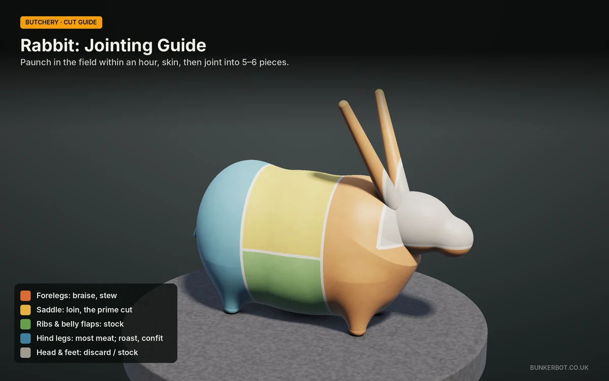
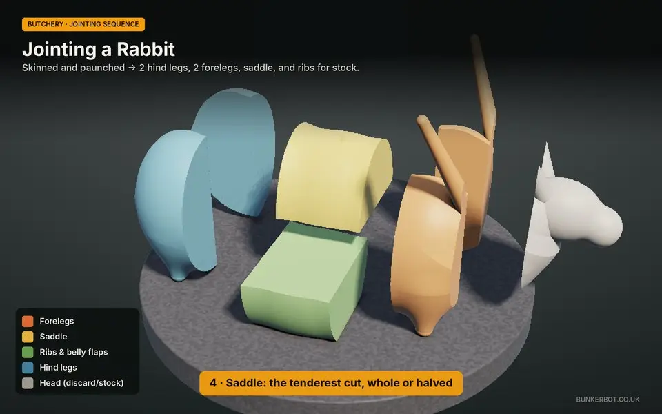
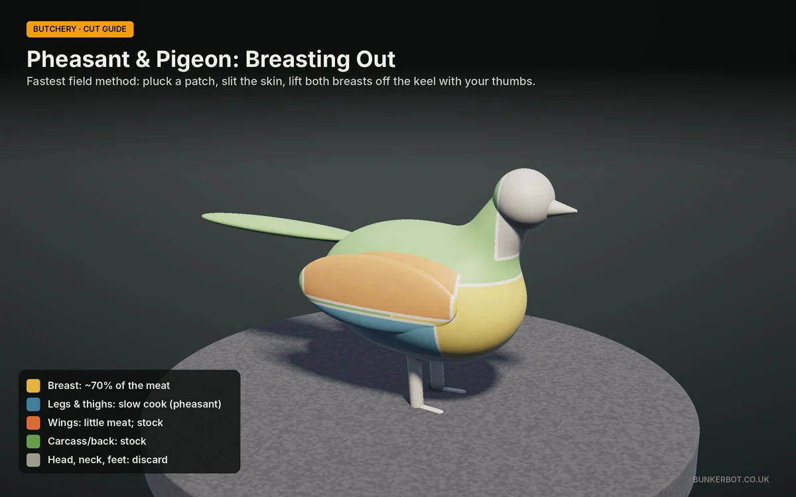
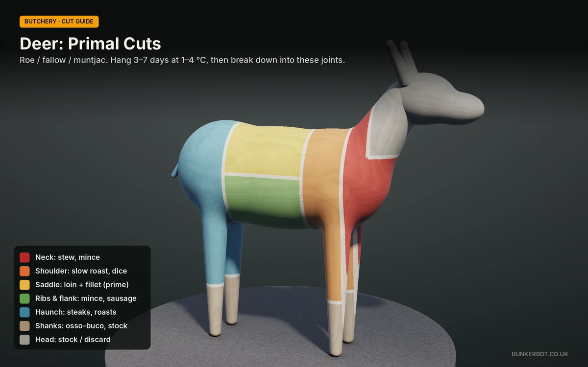
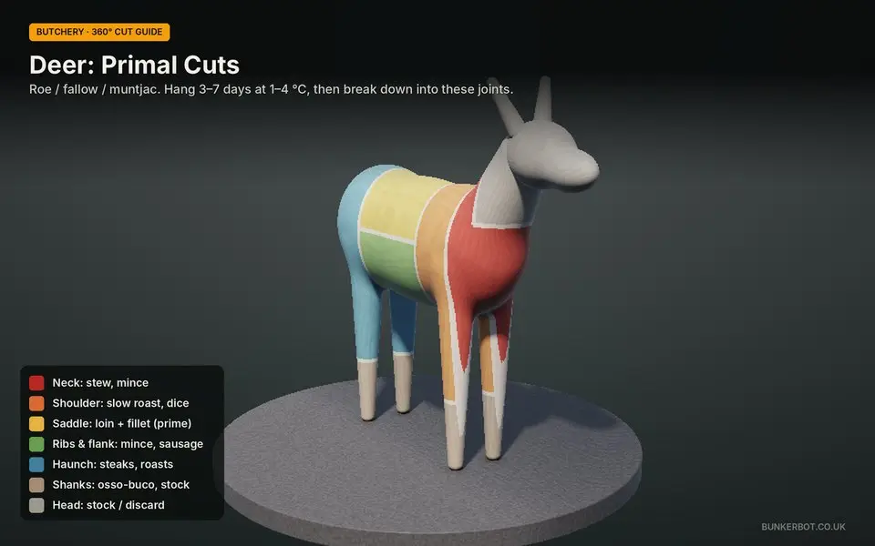
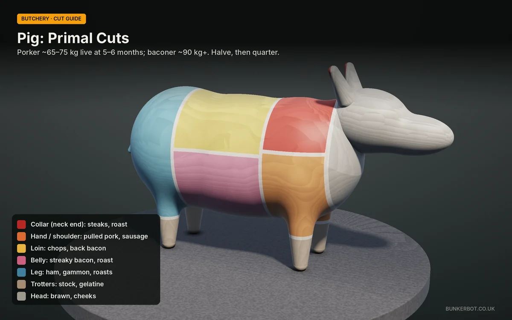
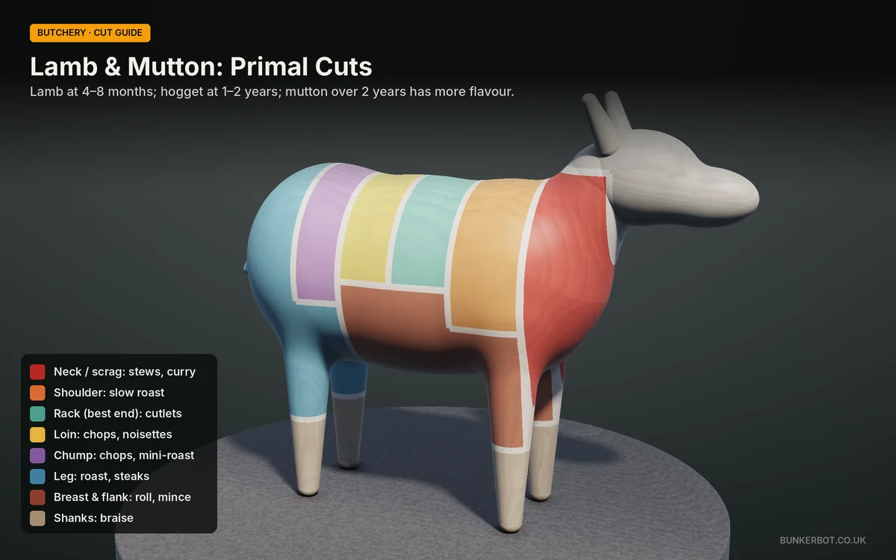
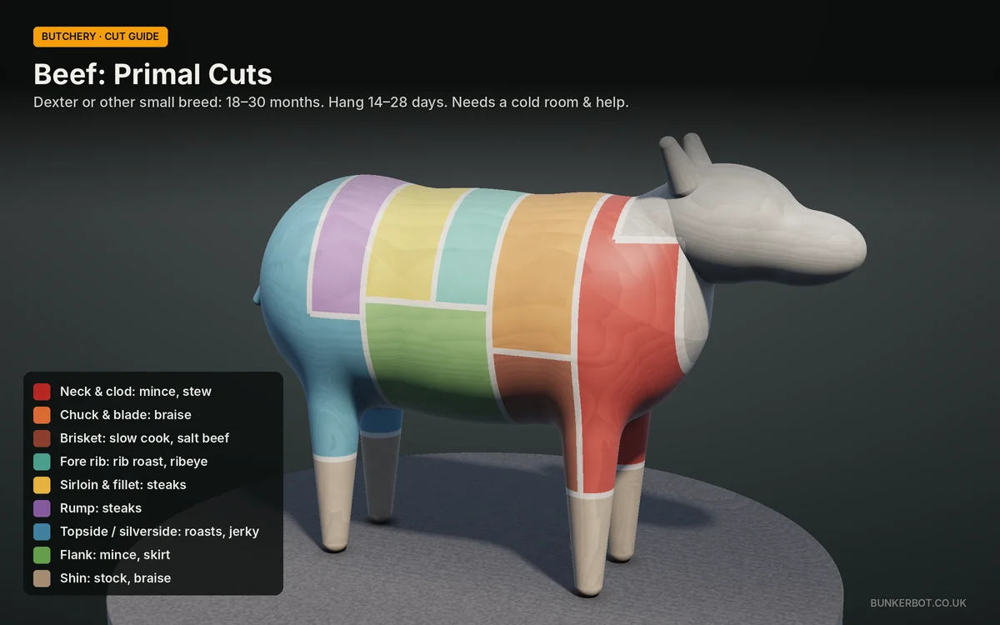

Butchery & Game Processing
Turning an animal into safe, stored food with nothing wasted.
1. Cool it fast: in warm conditions bacteria can double every 20 minutes. Get meat below 7 °C quickly. 2. Keep it clean: gut contents and hair on meat are how people get ill. 3. Use everything: fat, organs, bones and hide are calories, medicine and materials.
1. Kit
| Tool | Use |
|---|---|
| Drop-point skinning/gutting knife (9–11 cm) | Paunching, gralloch, skinning |
| Boning knife (15 cm, semi-flex) | Jointing, removing meat from bone |
| Bone saw / hacksaw with a clean blade | Splitting pelvis, sternum, chops |
| Cleaver | Ribs, chops |
| Whetstone + steel | A dull knife is dangerous and slow |
| Gambrel + rope/pulley | Hanging deer, pigs, sheep |
| Nitrile gloves (lots) | Protection from leptospirosis, toxoplasmosis, E. coli |
| Game bags (breathable muslin) | Keep flies off while hanging |
| Clean water, food-safe sanitiser, paper towel | Rinse and wipe |
| Meat thermometer | Core temperatures for cooking and chilling |
2. Hygiene & Inspection
Inspect every carcass
| Look for | Means | Action |
|---|---|---|
| Smooth, deep-red liver | Healthy | ✅ Eat |
| White spots on liver (rabbit) | Coccidiosis / tapeworm cysts | ❌ Discard liver; meat usually fine if animal was otherwise healthy |
| Abscesses, pus, yellow nodules (deer lymph nodes, lungs) | Infection / possible TB | ❌ Discard whole carcass; for deer, report suspected TB to APHA |
| Flukes in liver (deer, sheep) | Liver fluke | ❌ Discard liver |
| Myxomatosis (swollen eyes, rabbit) | Viral, not transmissible to people | ⚠️ Generally discarded; never eat an animal that was obviously sick |
| Bad smell, green tinge | Spoilage | ❌ Discard |
| Bloodshot meat around a wound | Bruising | Trim generously |
If you ever supply wild game to anyone else (even a local pub), UK food-hygiene law expects the carcass to have been examined by a trained hunter (e.g. via DSC1 or a Lantra/BASC wild-game meat hygiene course). For your own family's table, the same knowledge keeps you safe.
Temperatures
| Stage | Target |
|---|---|
| Chilling small game | Below 4 °C within 24 h |
| Hanging venison/beef | 1–4 °C, good airflow, humidity 80–85% |
| Freezer | −18 °C or colder |
| Cooking: whole muscle (venison, beef, lamb steaks/joints) | 63 °C+ (can be served pink; surface bacteria are killed by searing) |
| Cooking: minced, small game, pork, poultry, anything shot with lead | 74 °C+ core |
Cut away meat around shot holes and remove every pellet you find. Lead fragments are a long-term poison, especially for children and pregnant women. Use non-lead ammunition for food.
3. Rabbit


Paunching (field gutting): within an hour
- Empty the bladder: hold the rabbit belly-out and press firmly down from chest to tail.
- Pinch up the belly skin and nick it with the tip of your knife. Cut skin only, not the gut.
- Insert two fingers under the skin, blade facing out, and slit up to the ribcage.
- Flick out the guts: hold the rabbit by the shoulders, belly down, and flick it sharply downwards. The intestines and stomach drop out.
- Hook out the remaining bits. Keep the liver, kidneys and heart if they look healthy.
- Hock it (cut a slit between the leg bone and tendon of one hind leg and push the other leg through) to hang or carry.
Skinning: 2 minutes, no tools beyond a knife
- Cut off the feet at the first joint, and the head.
- Pinch the skin at the middle of the back, cut a small slit, and insert fingers of both hands.
- Pull apart in opposite directions. The skin peels off like a jumper: back legs out one way, front legs and neck the other.
- Remove the tail and any remaining fur. Rinse briefly in cold water.
Jointing
- Hind legs: cut along the pelvis and pop the ball joint; cut through.
- Forelegs: there's no ball joint. Lift each leg and cut under the shoulder blade.
- Saddle: cut off the rib cage just behind the last rib (bone saw or cleaver), then trim the belly flaps. The saddle is the tenderest piece; cut it in two or keep it whole.
- Ribs, belly flaps and neck go to the stock pot.
4. Pigeon & Pheasant

Breasting out (pigeon, pheasant, duck): fast field method
- Lay the bird on its back. Pluck a patch of feathers over the breastbone.
- Pinch and tear the skin over the breastbone; peel it back to both sides.
- Run your thumbs down either side of the keel (breastbone) and lift the breasts off, or use a knife along the keel and ribs.
- For pheasant, also take the legs: pull the skin off, pop the hip joint, cut through. They're tough: slow cook them.
- Remove any shot and feathers. Pigeon breasts are ready to cook. Pheasant benefits from hanging (below).
Whole bird (plucked)
- Hang pheasant, unplucked and ungutted, by the neck at 5–8 °C for 3–7 days. The colder it is, the longer you can hang it.
- Pluck against the feather direction in small pinches, holding the skin taut. Do it outside or in a bag. Dry plucking is easier on a slightly warm bird; scald ducks briefly (65 °C for 30–60 s) to loosen feathers.
- Remove head, feet (twist and pull to draw the leg sinews), crop and windpipe.
- Gut: cut around the vent, then reach in and draw out everything in one go. Keep heart, liver (remove the green gall bladder carefully) and gizzard (split, peel off the lining).
- Rinse, dry, cook or freeze.
5. Deer


The gralloch (field gutting): within 30 minutes
- Bleed (if it wasn't a heart/lung shot): stick the knife into the chest just in front of the brisket, angled toward the heart.
- Lay the deer on its back (or side), and wear gloves.
- Tie off the gullet (oesophagus): open the neck, separate the gullet from the windpipe, and knot it so stomach contents can't leak.
- Open the belly: pinch the skin and slit from the pelvis to the breastbone with two fingers guiding the blade under the skin. Never puncture the stomach or intestines.
- Free the rectum ("ring the anus"): cut around it, tie it off or bag it, and pull it through into the body cavity.
- Roll out the stomach and intestines. Cut the diaphragm and remove the heart, lungs and liver (the "pluck"). Inspect them (see §2).
- Drain and wipe the cavity. Prop it open with a stick to cool.
- Leave the green gralloch discreetly, away from paths, or bury it. Under UK animal by-products rules, the green offal of wild game may be left on the land it was shot on.
Hanging
- Roe/muntjac: 3–7 days at 1–4 °C. Fallow/red: 7–14 days.
- Hang by the hind legs (gambrel through the hocks), skin on, in a fly-proof larder with airflow.
- No fridge? In UK winter, a shaded, fly-screened outbuilding often sits at 2–6 °C. Watch the forecast; once it's above ~7 °C, butcher immediately.
Skinning & breakdown
- Skin from the hind legs down: cut around the hocks, slit up the inside of the legs, then pull and fist the hide off down the body. Use the knife only where you must.
- Remove the head at the first vertebra.
- Front legs/shoulders: there's no bone joint to the body. Lift the leg and cut along the ribcage under the shoulder blade, and it comes away.
- Haunches: cut along the pelvis and through the hip ball joint. Bone them out into topside, silverside, rump and knuckle, or keep them whole for roasting.
- Saddle: remove the fillets (inside, under the spine; small and the tenderest), then the loins (backstraps) running along the top of the spine.
- Neck: stew or mince on the bone.
- Ribs and flank: strip for mince and sausage.
- Bones: roast and boil for stock and fat.
| Cut | Best use |
|---|---|
| Fillet & loin | Flash-fry, roast rare |
| Haunch | Steaks, roasts, biltong/jerky |
| Shoulder | Slow-roast, dice, curry |
| Neck & shanks | Braise, osso-buco, stock |
| Ribs/flank/trim | Mince, burgers, sausage (add 15–20% pork fat) |
6. Pig

You may slaughter your own pig at home only for your own household's consumption. The meat cannot be sold or given to anyone outside your household. See Smallholding Livestock: Home Slaughter.
Slaughter & scald (overview)
- Stun (captive bolt or a correctly placed shot from a suitable firearm), then stick immediately (cut the major blood vessels in the chest) and bleed out (collect the blood for black pudding if wanted: stir it constantly, add salt).
- Scald at 62–65 °C for 3–6 minutes (in a bath or barrel), then scrape the hair off with a bell scraper. Alternatively skin the pig (easier, but you lose crackling and bacon rind).
- Hang by the hind legs, gut it as for deer, and split it down the spine.
- Chill overnight at 1–4 °C before cutting.
| Cut | Use |
|---|---|
| Collar/neck end | Steaks, roast, coppa |
| Shoulder (hand) | Pulled pork, sausage, salami |
| Loin | Chops, roast, back bacon |
| Belly | Streaky bacon, pancetta, roast belly |
| Leg | Ham, gammon, prosciutto-style cure |
| Head | Brawn, cheeks (best braising meat on the pig) |
| Trotters, skin, bones | Stock, gelatine, crackling |
| Back fat & leaf lard | Render to lard: a critical survival fat |
7. Lamb & Mutton

- Kill, bleed, skin (sheep are skinned, not scalded), gut as for deer, and hang for 4–7 days (lamb) or 7–14 days (mutton) at 1–4 °C.
- SRM rule: sheep and goats over 12 months old, or with a permanent incisor erupted, have Specified Risk Material (the spinal cord) that must be removed and disposed of as animal by-product, even for home slaughter. Split the carcass to one side of the spine, or bone out the loins.
- Mutton fat (tallow): render it for cooking, candles, soap and leather dressing.
8. Beef

- Beef is a team job: a block and tackle or tractor loader, a cold room, and 2–3 people. Many smallholders use an abattoir and then butcher at home.
- BSE/SRM rules are stricter for cattle. Read the FSA Home slaughter of livestock guide before attempting it, and check passport/age requirements.
- Hang 14–28 days at 1–3 °C for tenderness. Hang it as halves or quarters.
- Preserve: salt beef (brisket), biltong and jerky (topside/silverside), and pressure-canned stewing beef.
9. Offal, Fat & Bones: Nothing Wasted
| Part | Use |
|---|---|
| Liver, heart, kidneys | Highest vitamin density in the animal: eat them first, fresh |
| Fat (suet, leaf lard, back fat) | Render slowly at low heat; strain; store in sealed jars. Lard keeps months cool and dark. |
| Bones | Roast, then simmer 12–24 h for stock; marrow is fat-rich |
| Blood | Black pudding (with fat and oats) |
| Hides | Rawhide, leather (brain or bark tanning), rugs |
| Sinew | Cordage, bow backing, sewing thread |
| Gut casings | Sausage skins (clean thoroughly, salt) |
| Waste | Bury deep (where legal), or compost carefully. Livestock fallen stock must go via the knacker in England. |
10. Preserving Without Power
| Method | How | Keeps | Notes |
|---|---|---|---|
| Salt curing (dry) | 3–5% salt (+0.25% curing salt #2 for long cures) by weight; rub, press, turn, then hang to dry | Months | Bacon, ham, coppa. Needs 2–12 °C. |
| Brining | 10% brine, 1 day per 0.5 kg | Weeks (then smoke or cook) | Salt beef, gammon |
| Cold smoking | <30 °C smoke for hours to days after curing | Weeks–months | Flavour and surface protection only: must be cured first |
| Hot smoking | 70–90 °C until cooked through | 1–2 weeks chilled | Fish, sausage, game birds |
| Jerky / biltong | Thin, lean strips; salt, vinegar and spice; dry at 50–70 °C or in a breezy, warm, dry space | 1–2 months | Trim all fat (fat goes rancid) |
| Pressure canning | 10–15 psi per tested recipe, e.g. 75–90 min for meat | 1–2+ years | Meat must be pressure-canned. Water-bath canning risks botulism. |
| Confit | Cook in fat, then store submerged in fat, cool | Weeks–months | Duck legs, rabbit legs, pork |
| Pemmican | Dried pounded meat + rendered fat (1:1), optional dried berries | Months–years | High calorie; the classic survival food |
| Freezing | −18 °C, vacuum sealed | 6–12 months | Needs backup power |
11. Kit Tiers
Tier 1: Small game (£50–150)
Knife, whetstone, gloves, game bags, poultry shears, a cutting board, a large stock pot.
Tier 2: Deer & sheep (£150–600)
Boning knife, bone saw, gambrel, rope/pulley, meat thermometer, vacuum sealer, mincer (manual), sausage stuffer, chest freezer.
Tier 3: Pigs & home-kill (£600–3,000)
Scalding tank/bath, bell scrapers, stainless table, meat hooks and rail, cold room or converted chiller (CoolBot-style controller + A/C), captive bolt (with training), pressure canner, smoker.
Tier 4: Off-grid (£3,000+)
Wood-fired smokehouse, 50 kg+ salt and curing salts, spare knives and saw blades, a hand-crank mincer, 2+ pressure canners with spare gaskets, 500+ lids, a fly-proof larder with thermal mass for passive cooling, and printed recipes and cure tables.
Related Sections: UK Survival Hunting & Trapping → Fishing → Smallholding Livestock → Animal Husbandry → Food & Water